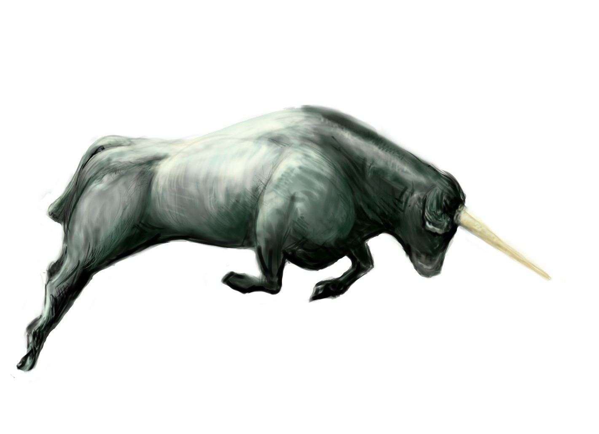
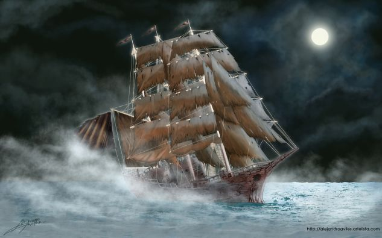
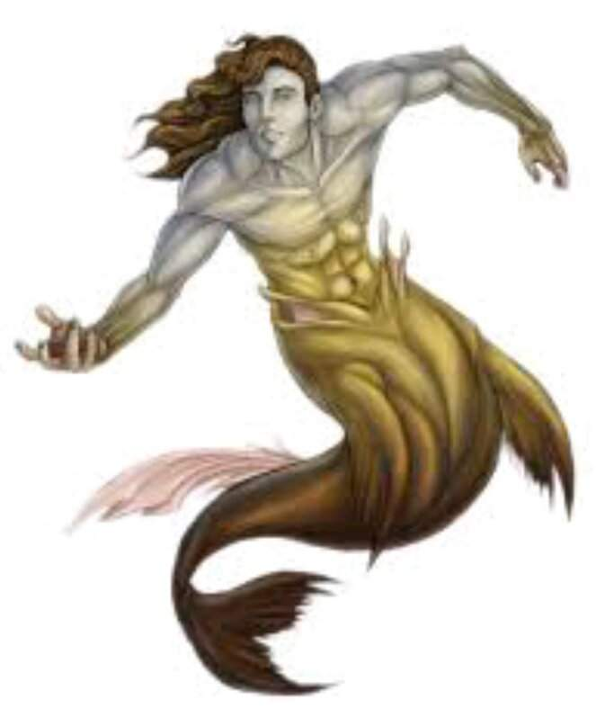
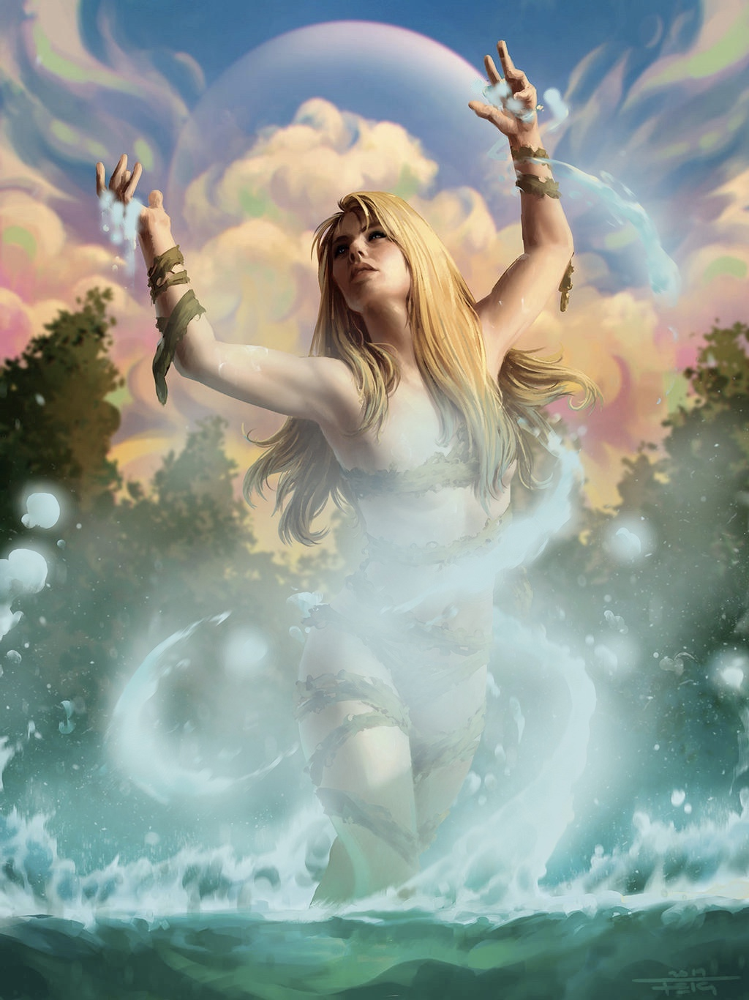

Mythical Creatures Around the World
7 Chilote Mythical Creatures
In Southern Chile, the Chilote mythology (or Chilota mythology) formed from the myths, legends and beliefs of the people who lived in the Chiloé Archipelago, a group of islands off the mainland of country Chile. The mythology of Chiloé resulted from a mixture of the indigenous religion and beliefs of the Huilliche and Chono and the legends and superstitions brought by the Spanish; the culture of the archipelago remained strong due to little contact from the rest of Chile and the Western World, making the mythology distinctive from the rest of Chile to this day. Within the mythology, its mythical creatures rely on a general hierarchy, with the sea serpants Tenten Vilu and Caicai Vilu at the top rankings; their legendary battle is said to have caused the creation of the archipelago. Below them is the king of the seas, the Millalobo, and his wife the Huenchula. Below them are their three children: the Pincoy, the prince of the sea, and the Pincoya and Sirena chilota, the princesses; they aid their parents in ruling the seas. Below them are other mythical creatures with given ranks by the Millalobo. Earthly creatures, however, are given no heirarchy. However, some humans are said to have magical powers such as witches with their ability to fly and have different creatures under their command; an example of such creatures is something called the Invunche. There is also machis, people who played an important role in Mapuche culture and religion; they possess their own characteristics and functions in the Chilote.
Carbunclo (carbuncle)

Carbunclo sourced from A Book of Creatures
A carbunclo is an intriguing creature sighted in the southernmost countries of South America, including Argnetina, Paraguay, and Chile and its islands called the Chiloé Archipelago. There was even a possible sighting of their blue glow in 1925 during a great drought in Tulahuén, Chile; it was believed a family of carbunclos were heading towards Río Grande in search of water. Description of its appearance vary from resembling a small dog, a bivalve, or a cat with a glowing chin. In 1791, Father Narciso and Barcel described its shell possess beautiful plumage and spots on its breast. In 1879, a man named Eulogio Rojas noted the carbunclo having more than four legs while observing it a meter way. Regardless, its most notable features include a shell, usually resembling one like an armidillo, and a glowing stone on its forehead usually depicted as red as a ruby. It's body is also thought to glow a bright bluish-white aura, making it easily noticeable especially in the night when it searches for food and water, so when an enemy is detected, the carbunclo will clamp up in its shell to distinguish its light and camouflage into an ordinary stone. Along with being about the size of a cat, this creature is said to be able to leap and run swifty and have keen hearing senses of smell as additional defense from enemies. Likely due to its stone on its forehead, its name derived from the latin word carbunculus meaning "little coal". However, its alluring blue light and the glow from its stone possibly led people to believe hold untold riches within their bodies, and thus sought after by miners and prospectors; in Chile, there is even a meticulous procedure into finding its treasure if buried. Even a Spanish cleric, explorer and author named Martín del Barco Centenera tried hunting it down, believing a carbunclo's stone would bring joy and fortune. But luckily no one, not even Martín del Barco, has yet to catch these beautiful creatures.
Basilisco Chilote

Basilisco Chilote by Deinoscaos
These bizarre versions of a dragon-like creature is said to have a rooster's head and a serpent-like dragon and hatched from a greyish-white egg, known as a lloilloi egg or a lloe egg, that's been incubated and laid by a rooster. You'd know this is a lloilloi egg egg because it doesn't have any yolk and resembles marble. It would then live under the house of its soon-to-be prey: humans. During the day, it stays hidden away until nightfall when it will prey on the house's inhabitants. During the night, the Basilisco sings a soothing song that lulls the humans to sleep or further ensure those already asleep are in a deeper sleep. It would then slither onto their chests and start sucking the phlegm and saliva from their mouths. However, this isn't a quick death. One week of nightly draining would leave the victims noticing their mouths dry and cracked and then feeling fatigue, having no appetite, and further loosing muscle mass over time until their a drying walking husk, weak with labored breath. At this final stage is when the Basilisco Chilote extracts its victims' final breaths, letting the people die from dehydration. The Basilisco Chilote would then move onto a new house and repeate the process. The Basilisco Chilote can also turn people into stone with a single gaze - because why not.In order to kill a Basilisco, you got to kill it while it's still an egg as soon as it's laid and kill the chicken that laid it to further prevent more from being born. After it hatches though, the only way to kill it is to burn the house it's living in. Myth of this creature dates back to the 16th century during the time of Spanish Conquistadores arrived at the Chiloé Archipelago. In addition, it is said the creature is a combination of three similar beasts: the baslilisk, the cockatrice (both from European and Spanish mythologies), and the Colo Colo from Mapuche mythology.
The Camahueto

Mythical Creatures: El Camahueto by Amanda
This creature is generally described as a large young calf or bull with a single horn of gold or ivory portruding from its head and grayish or green fur. Born from a fragment of a Camahueto horn planted near the coast or freshwater, the Camahueto grows underground for 20 to 30 years and then migrates towards the sea where it'll live the rest of its life at. During its journey, it would leave a path of destruction from collapsing canyons, to creating streambeds by dragging its horn and even splitting open the earth; a machi or a bruja could use a rope woven from seaweed to lead the creature to render it docile in order to deliver it to the sea without the destruction part. As a carnivore, it eats fish and humans. Its horn is a valued item especially to machis (traditional healers and religious leaders of the Mapuche culture of Chile and Argentina) who could it in a mixture of sea water apple cider until it turns into vinegar and course salt, a medicine that is said to cure the impotence (Erectile Dysfunction) of men as well as other ailments such as anaemia, skin infections, rheumatism, and so on. The horn can also be used to bestow incredible strength and endurance; too large of a dose, however, could enter a state of madness, becoming "encamahuetado". If the horn is intended to be sold in scrapes, they would be boiled to prevent others from breeding the creatures inside their bodies if consumed, and obtaining one is said to ensure wealth. Luckily, a Camahueto can regrow their horn, so it isn't lost forever for them. However, if a person tries to take the horn away to another land or province, the person must keep it in a container filled with toasted flour so the Camahueto can't smell it, and thus won't know its horn is being taken away, otherwise the consequences would be dire for the person.
The Caleuche

©El Caleuche by Alejandro Avilés Pérez
The Caleuche is one of the most important myths belonging to northen Chilote mythology. There are numerous version of the legend of this myth. One version claims the ship is crewed by the souls of the drowned who are brought to the ship by the Sirena Chilota, the Pincoya (two sisters) and their brother the Pincoy - the three children of Millalobo who governs the population and actions of most sea creatures. Another version claims the ship allures fishermen and sailors with enchanting music only to make the slaves to the ship for eternity; the slaves are defined by their legs folded back. Another common version claims the ship is the magic ship of Warlock of Chiloé who used it to transport goods and host parties while also used by other warlocks who go on a journey on the ship every three months. Another version tells of the crew able to make magical pacts with certain traders to prosperity in exchange for favors including using their house or other illegal and dark purposes. Overall though, the Caleuche is believed to be a living entity. It appears as a shining white ship with three masts that carry five sails. In addition, it is said that the ship would disappear as soon as another ship sails too close and could travel underwater. The crew of the Caleuche have two different groups: the dead who were brought back to life (zombie-like), sailors turned into creatures similar to an Invunche, a brujo Chilote (a wizard or sorcerer) who joined voluntarily and the supernatural beings from Chilote mythology who seem to control it.
El Pincoy

Pincoy sourced from Animoapps
With a body of a large sea lion colored bright golden and a face of a handsome man with long golden hair that's alluring to women, the Pincoy is a water spirit son of the Millaloba, the king of the seas of Chiloé, and brother of the Pincoya and the Sirena chilota. With his sisters, he guides the dead to the mythical ship called the Caleuche and is also responsible for singing a song that makes the Pincoya, to whom he is married to, perform her magical dance for the fertility of the sea.
La Pincoya

Pincoya by Feig-Art, lightblue highlights added in from original
Like the Pincoy, the Pincoya is a water spirit in a form of a naked woman with long blong hair, immense beauty, a cheerful and sensous personality, and a daughter of the Millalobo. As the personification of the fertility of marine life, she provides the residents of Chiloé with the abundance or deficiency of seafood through her dance she performs along with the song of the Pincoy. If she isfacing the shores, the fish will be abundant, and if she has her back to the sea, the catchings will be scarce. In addition, she is one of the three children of Millalobo who help deliver the deceased and drowned to the Caleuche.
La Sirena chilota

Sirena Chilota sourced from Instagram
The Sirena chilota is the youngest daughter of Millalobo with a body of half fish and half woman with blond hair, golden scales and a youthful beauty of a teenage girl. Along with helping her siblings carry the bodies to the Caleuche, she is tasked by her father to care for all fish. She is also more than a delicate little mermaid. She possess very large flukes, a strong tail that she can use to swim for long distances while carrying the bodies of the dead, and tears that are delicate but powerful if used in a spell.
sources:
Carbunclo - abookofcreatures.comCarbunclo - en.wikipedia.org
Basilisco Chilote - en.wikipedia.org
Basilisco Chilote - inthedarkair.wordpress.comm
Camahueto - cryptidz.fandom.com
Camahueto - intricatecantrips.wordpress.com
Camahueto - mandradey.wixsite.com
Caleuche - en.wikipedia.org
Caleuche - folkrealmstudies.weebly.com
The Pincoy, The Pincoya and The Sirena chilota - folkrealmstudies.weebly.com
The Pincoy - en.wikipedia.org
The Pincoya - en.wikipedia.org
The Sirena chilota - en.wikipedia.org